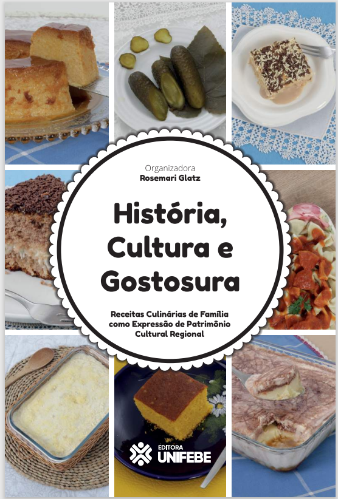

Receitas Culinárias de Família – Rosemary Glatz

Título:
História, Cultura e Gostosura
Autor:
Rosemary Glatz
Instituição:
UNIFEBE
Ano:
2018 – 1ª Edição
Nº de Páginas:
120
ISBN:
978-85-98713-14-4
Tipo:
Livro Digital
Formato:
.pdf
Licença:
Gratuito
Descrição
Através da receita culinária, há a possibilidade de descobrir um pouco da história e da cultura de uma sociedade, uma vez que a memória familiar pode ser uma das nossas maiores heranças. Cada família tem uma receita que passa
ler
Voltar a pagina Principal